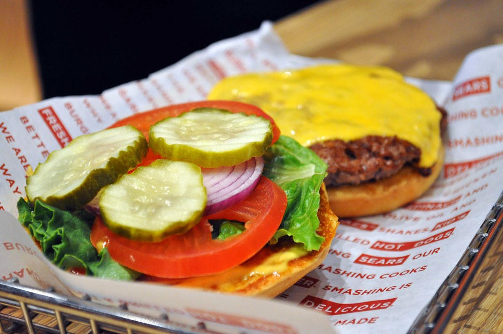

Smashburger

The classic Smashburger is a delicous staple of American cuisine. A personal
favorite of mine, loving to make it at least once a month. There's nothing quite like the layers
of flavors sandwiched between two beautifully toasted buns. The technique of smashing the patty into
a blazing hot pan is truly what sets this apart from a normal burger. It creates an astoundingly
delightful crust on the outside, that is simply delightful. Virtually any toppings pair
extremely well this classic. So feel free to explore!
Ingredients Needed
- Ground Beef
- Buns (Brioche, Kaiser, whatever you prefer!)
- Oil
- Mayo
- Mustard
- Lettuce
- Tomato
- Onion
- Pickles
- Cheese (American is my go-to for this, however use what you like.)
- Salt and Pepper for seasoning
Cooking Directions
- Form the ground beef into golf ball shapes, weighing around a quarter pound each.
- Slice your onions and tomatoes.
- Preheat a cast iron or heavy bottomed skillet until it's very hot.
- Toast the buns in butter until beauitifully brown.
- "Dope" the buns with mayo, mustard, and toppings being used, lettuce, tomato, onion, pickle, etc.
- Drop a small teaspoon or so of oil into the hot pan.
- Drop the burger ball into the pan, and immediately smash it down with a large metal spatula.
- Season the top with salt and peppar.
- Depending on the size, they can cook quick! I use the eye test when you start to see bubbles on top.
- With a thin spatula, get underneath and give them a good flip.
- Immediately apply the cheese to the top.
- Cover for a minute or so until melted. (They cook quickly at this point!)
- Remove and place on "doped" bun.
- Enjoy!